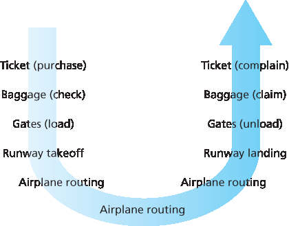
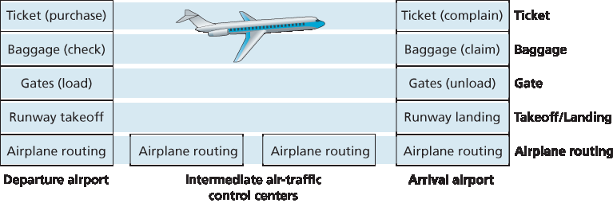
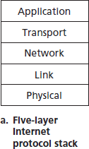
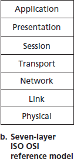
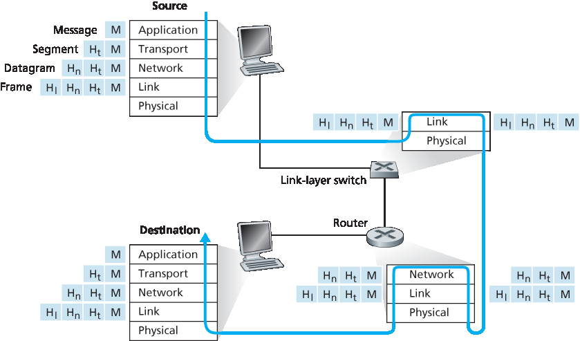

1.5 协议层及其服务模型#
1.5 Protocol Layers and Their Service Models
From our discussion thus far, it is apparent that the Internet is an extremely complicated system. We have seen that there are many pieces to the Internet: numerous applications and protocols, various types of end systems, packet switches, and various types of link-level media. Given this enormous complexity, is there any hope of organizing a network architecture, or at least our discussion of network architecture? Fortunately, the answer to both questions is yes.
1.5.1 层架构#
1.5.1 Layered Architecture
Before attempting to organize our thoughts on Internet architecture, let’s look for a human analogy. Actually, we deal with complex systems all the time in our everyday life. Imagine if someone asked you to describe, for example, the airline system. How would you find the structure to describe this complex system that has ticketing agents, baggage checkers, gate personnel, pilots, airplanes, air traffic control, and a worldwide system for routing airplanes? One way to describe this system might be to describe the series of actions you take (or others take for you) when you fly on an airline. You purchase your ticket, check your bags, go to the gate, and eventually get loaded onto the plane. The plane takes off and is routed to its destination. After your plane lands, you deplane at the gate and claim your bags. If the trip was bad, you complain about the flight to the ticket agent (getting nothing for your effort). This scenario is shown in Figure 1.21.

Figure 1.21 Taking an airplane trip: actions

Figure 1.22 Horizontal layering of airline functionality
Already, we can see some analogies here with computer networking: You are being shipped from source to destination by the airline; a packet is shipped from source host to destination host in the Internet. But this is not quite the analogy we are after. We are looking for some structure in Figure 1.21. Looking at Figure 1.21, we note that there is a ticketing function at each end; there is also a baggage function for already-ticketed passengers, and a gate function for already-ticketed and already-baggage- checked passengers. For passengers who have made it through the gate (that is, passengers who are already ticketed, baggage-checked, and through the gate), there is a takeoff and landing function, and while in flight, there is an airplane-routing function. This suggests that we can look at the functionality in Figure 1.21 in a horizontal manner, as shown in Figure 1.22.
Figure 1.22 has divided the airline functionality into layers, providing a framework in which we can discuss airline travel. Note that each layer, combined with the layers below it, implements some functionality, some service. At the ticketing layer and below, airline-counter-to-airline-counter transfer of a person is accomplished. At the baggage layer and below, baggage-check-to-baggage-claim transfer of a person and bags is accomplished. Note that the baggage layer provides this service only to an already-ticketed person. At the gate layer, departure-gate-to-arrival-gate transfer of a person and bags is accomplished. At the takeoff/landing layer, runway-to-runway transfer of people and their bags is accomplished. Each layer provides its service by (1) performing certain actions within that layer (for example, at the gate layer, loading and unloading people from an airplane) and by (2) using the services of the layer directly below it (for example, in the gate layer, using the runway-to-runway passenger transfer service of the takeoff/landing layer).
A layered architecture allows us to discuss a well-defined, specific part of a large and complex system. This simplification itself is of considerable value by providing modularity, making it much easier to change the implementation of the service provided by the layer. As long as the layer provides the same service to the layer above it, and uses the same services from the layer below it, the remainder of the system remains unchanged when a layer’s implementation is changed. (Note that changing the implementation of a service is very different from changing the service itself!) For example, if the gate functions were changed (for instance, to have people board and disembark by height), the remainder of the airline system would remain unchanged since the gate layer still provides the same function (loading and unloading people); it simply implements that function in a different manner after the change. For large and complex systems that are constantly being updated, the ability to change the implementation of a service without affecting other components of the system is another important advantage of layering.
Protocol Layering#
But enough about airlines. Let’s now turn our attention to network protocols. To provide structure to the design of network protocols, network designers organize protocols—and the network hardware and software that implement the protocols—in layers. Each protocol belongs to one of the layers, just as each function in the airline architecture in Figure 1.22 belonged to a layer. We are again interested in the services that a layer offers to the layer above—the so-called service model of a layer. Just as in the case of our airline example, each layer provides its service by (1) performing certain actions within that layer and by (2) using the services of the layer directly below it. For example, the services provided by layer n may include reliable delivery of messages from one edge of the network to the other. This might be implemented by using an unreliable edge-to-edge message delivery service of layer n−1, and adding layer n functionality to detect and retransmit lost messages.
A protocol layer can be implemented in software, in hardware, or in a combination of the two. Application-layer protocols—such as HTTP and SMTP—are almost always implemented in software in the end systems; so are transport-layer protocols. Because the physical layer and data link layers are responsible for handling communication over a specific link, they are typically implemented in a network interface card (for example, Ethernet or WiFi interface cards) associated with a given link. The network layer is often a mixed implementation of hardware and software. Also note that just as the functions in the layered airline architecture were distributed among the various airports and flight control centers that make up the system, so too is a layer n protocol distributed among the end systems, packet switches, and other components that make up the network. That is, there’s often a piece of a layer n protocol in each of these network components.
Protocol layering has conceptual and structural advantages [RFC 3439]. As we have seen, layering provides a structured way to discuss system components. Modularity makes it easier to update system components. We mention, however, that some researchers and networking engineers are vehemently opposed to layering [Wakeman 1992]. One potential drawback of layering is that one layer may duplicate lower-layer functionality. For example, many protocol stacks provide error recovery on both a per-link basis and an end-to-end basis. A second potential drawback is that functionality at one layer may need information (for example, a timestamp value) that is present only in another layer; this violates the goal of separation of layers.


Figure 1.23 The Internet protocol stack (a) and OSI reference model (b)
When taken together, the protocols of the various layers are called the protocol stack. The Internet protocol stack consists of five layers: the physical, link, network, transport, and application layers, as shown in Figure 1.23(a). If you examine the Table of Contents, you will see that we have roughly organized this book using the layers of the Internet protocol stack. We take a top-down approach, first covering the application layer and then proceeding downward.
Application Layer#
The application layer is where network applications and their application-layer protocols reside. The Internet’s application layer includes many protocols, such as the HTTP protocol (which provides for Web document request and transfer), SMTP (which provides for the transfer of e-mail messages), and FTP (which provides for the transfer of files between two end systems). We’ll see that certain network functions, such as the translation of human-friendly names for Internet end systems like www.ietf.org to a 32-bit network address, are also done with the help of a specific application-layer protocol, namely, the domain name system (DNS). We’ll see in Chapter 2 that it is very easy to create and deploy our own new application-layer protocols.
An application-layer protocol is distributed over multiple end systems, with the application in one end system using the protocol to exchange packets of information with the application in another end system. We’ll refer to this packet of information at the application layer as a message.
Transport Layer#
The Internet’s transport layer transports application-layer messages between application endpoints. In the Internet there are two transport protocols, TCP and UDP, either of which can transport application- layer messages. TCP provides a connection-oriented service to its applications. This service includes guaranteed delivery of application-layer messages to the destination and flow control (that is, sender/receiver speed matching). TCP also breaks long messages into shorter segments and provides a congestion-control mechanism, so that a source throttles its transmission rate when the network is congested. The UDP protocol provides a connectionless service to its applications. This is a no-frills service that provides no reliability, no flow control, and no congestion control. In this book, we’ll refer to a transport-layer packet as a segment.
Network Layer#
The Internet’s network layer is responsible for moving network-layer packets known as datagrams from one host to another. The Internet transport-layer protocol (TCP or UDP) in a source host passes a transport-layer segment and a destination address to the network layer, just as you would give the postal service a letter with a destination address. The network layer then provides the service of delivering the segment to the transport layer in the destination host.
The Internet’s network layer includes the celebrated IP protocol, which defines the fields in the datagram as well as how the end systems and routers act on these fields. There is only one IP protocol, and all Internet components that have a network layer must run the IP protocol. The Internet’s network layer also contains routing protocols that determine the routes that datagrams take between sources and destinations. The Internet has many routing protocols. As we saw in Section 1.3, the Internet is a network of networks, and within a network, the network administrator can run any routing protocol desired. Although the network layer contains both the IP protocol and numerous routing protocols, it is often simply referred to as the IP layer, reflecting the fact that IP is the glue that binds the Internet together.
Link Layer#
The Internet’s network layer routes a datagram through a series of routers between the source and destination. To move a packet from one node (host or router) to the next node in the route, the network layer relies on the services of the link layer. In particular, at each node, the network layer passes the datagram down to the link layer, which delivers the datagram to the next node along the route. At this next node, the link layer passes the datagram up to the network layer.
The services provided by the link layer depend on the specific link-layer protocol that is employed over the link. For example, some link-layer protocols provide reliable delivery, from transmitting node, over one link, to receiving node. Note that this reliable delivery service is different from the reliable delivery service of TCP, which provides reliable delivery from one end system to another. Examples of link-layerprotocols include Ethernet, WiFi, and the cable access network’s DOCSIS protocol. As datagrams typically need to traverse several links to travel from source to destination, a datagram may be handled by different link-layer protocols at different links along its route. For example, a datagram may be handled by Ethernet on one link and by PPP on the next link. The network layer will receive a different service from each of the different link-layer protocols. In this book, we’ll refer to the link-layer packets as frames.
Physical Layer#
While the job of the link layer is to move entire frames from one network element to an adjacent network element, the job of the physical layer is to move the individual bits within the frame from one node to the next. The protocols in this layer are again link dependent and further depend on the actual transmission medium of the link (for example, twisted-pair copper wire, single-mode fiber optics). For example, Ethernet has many physical-layer protocols: one for twisted-pair copper wire, another for coaxial cable, another for fiber, and so on. In each case, a bit is moved across the link in a different way.
The OSI Model#
Having discussed the Internet protocol stack in detail, we should mention that it is not the only protocol stack around. In particular, back in the late 1970s, the International Organization for Standardization (ISO) proposed that computer networks be organized around seven layers, called the Open Systems Interconnection (OSI) model [ISO 2016]. The OSI model took shape when the protocols that were to become the Internet protocols were in their infancy, and were but one of many different protocol suites under development; in fact, the inventors of the original OSI model probably did not have the Internet in mind when creating it. Nevertheless, beginning in the late 1970s, many training and university courses picked up on the ISO mandate and organized courses around the seven-layer model. Because of its early impact on networking education, the seven-layer model continues to linger on in some networking textbooks and training courses.
The seven layers of the OSI reference model, shown in Figure 1.23(b), are: application layer, presentation layer, session layer, transport layer, network layer, data link layer, and physical layer. The functionality of five of these layers is roughly the same as their similarly named Internet counterparts. Thus, let’s consider the two additional layers present in the OSI reference model—the presentation layer and the session layer. The role of the presentation layer is to provide services that allow communicating applications to interpret the meaning of data exchanged. These services include data compression and data encryption (which are self-explanatory) as well as data description (which frees the applications from having to worry about the internal format in which data are represented/stored—formats that may differ from one computer to another). The session layer provides for delimiting and synchronization of data exchange, including the means to build a checkpointing and recovery scheme.
The fact that the Internet lacks two layers found in the OSI reference model poses a couple of interesting questions: Are the services provided by these layers unimportant? What if an application needs one of these services? The Internet’s answer to both of these questions is the same—it’s up to the application developer. It’s up to the application developer to decide if a service is important, and if the service is important, it’s up to the application developer to build that functionality into the application.
1.5.2 封装#
1.5.2 Encapsulation
Figure 1.24 shows the physical path that data takes down a sending end system’s protocol stack, up and down the protocol stacks of an intervening link-layer switch and router, and then up the protocol stack at the receiving end system. As we discuss later in this book, routers and link-layer switches are both packet switches. Similar to end systems, routers and link-layer switches organize their networking hardware and software into layers. But routers and link-layer switches do not implement all of the layers in the protocol stack; they typically implement only the bottom layers. As shown in Figure 1.24 , link-layer switches implement layers 1 and 2; routers implement layers 1 through 3. This means, for example, that Internet routers are capable of implementing the IP protocol (a layer 3 protocol), while link-layer switches are not. We’ll see later that while link-layer switches do not recognize IP addresses, they are capable of recognizing layer 2 addresses, such as Ethernet addresses. Note that hosts implement all five layers; this is consistent with the view that the Internet architecture puts much of its complexity at the edges of the network.

Figure 1.24 Hosts, routers, and link-layer switches; each contains a different set of layers, reflecting their differences in functionality
Figure 1.24 also illustrates the important concept of encapsulation. At the sending host, an application-layer message (M in Figure 1.24) is passed to the transport layer. In the simplest case, the transport layer takes the message and appends additional information (so-called transport-layer header information, Ht in Figure 1.24) that will be used by the receiver-side transport layer. The application-layer message and the transport-layer header information together constitute the transport-layer segment. The transport-layer segment thus encapsulates the application-layer message. The added information might include information allowing the receiver-side transport layer to deliver the message up to the appropriate application, and error-detection bits that allow the receiver to determine whether bits in the message have been changed in route. The transport layer then passes the segment to the network layer, which adds network-layer header information (\(H_n\) in Figure 1.24) such as source and destination end system addresses, creating a network-layer datagram. The datagram is then passed to the link layer, which (of course!) will add its own link-layer header information and create a link-layer frame. Thus, we see that at each layer, a packet has two types of fields: header fields and a payload field. The payload is typically a packet from the layer above.
A useful analogy here is the sending of an interoffice memo from one corporate branch office to another via the public postal service. Suppose Alice, who is in one branch office, wants to send a memo to Bob, who is in another branch office. The memo is analogous to the application-layer message. Alice puts the memo in an interoffice envelope with Bob’s name and department written on the front of the envelope. The interoffice envelope is analogous to a transport-layer segment—it contains header information (Bob’s name and department number) and it encapsulates the application-layer message (the memo). When the sending branch-office mailroom receives the interoffice envelope, it puts the interoffice envelope inside yet another envelope, which is suitable for sending through the public postal service. The sending mailroom also writes the postal address of the sending and receiving branch offices on the postal envelope. Here, the postal envelope is analogous to the datagram—it encapsulates the transport- layer segment (the interoffice envelope), which encapsulates the original message (the memo). The postal service delivers the postal envelope to the receiving branch-office mailroom. There, the process of de-encapsulation is begun. The mailroom extracts the interoffice memo and forwards it to Bob. Finally, Bob opens the envelope and removes the memo.
The process of encapsulation can be more complex than that described above. For example, a large message may be divided into multiple transport-layer segments (which might themselves each be divided into multiple network-layer datagrams). At the receiving end, such a segment must then be reconstructed from its constituent datagrams.